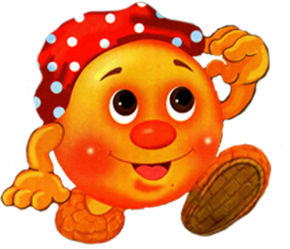

КОЛОБОК 3
И опять покатился — только Медведь его и видел!
Катится Колобок, навстречу ему Лиса:
— Колобок, Колобок, куда катишься?
— Качусь по дорожке.
— Колобок, Колобок, спой мне песенку!
Колобок и запел:
Я Колобок, Колобок,
Я по коробу скребен.
По сусеку метен,
На сметане мешон
Да в масле пряжон,
На окошке стужон.
Я от дедушки ушел,
Я от бабушки ушел,
Я от зайца ушел,
Я от волка ушел,
От медведя ушел,
От тебя, лисы, нехитро уйти!
А Лиса говорит:
— Ах, песенка хороша, да слышу я плохо. Колобок, Колобок, сядь ко мне на носок да спой еще разок, погромче.
Колобок вскочил Лисе на нос и запел погромче ту же песенку.
А Лиса опять ему:
— Колобок, Колобок, сядь ко мне на язычок да пропой в последний разок.
Колобок прыг Лисе на язык, а Лиса его — гам! — и съела. Вот и сказке Колобок конец, а кто слушал - молодец!
